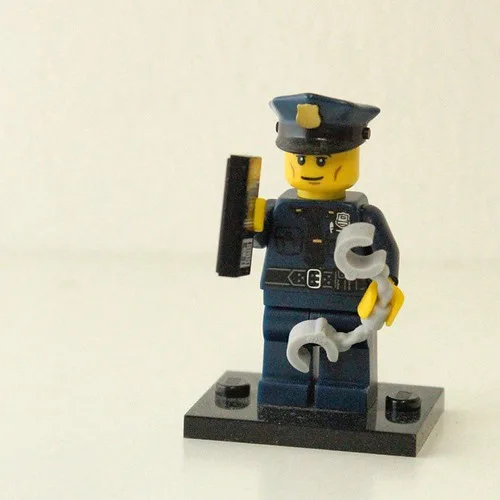

"죽을죄를 지었다"…인천 흉기난동 최충락 구속, 자택 압수수색까지
인천의 한 대형 상가에서 불특정 다수를 향해 흉기를 휘둘러 시민 10명을 다치게 한 혐의를 받는 59세 최충락 씨가 끝내 구속됐다. 인천지법은 16일 "도망할 염려가 있다"며 그에 대한 구속영장을 발부했다. 최씨는 영장실질심사를 받는 자리에서 "죽을죄를 지었다"고 진술한 것으로 전해졌지만, 피해자와 유족들의 충격과 분노는 쉽게 가라앉지 않고 있다.
사건은 지난 13일 오후 1시 48분쯤 인천 남동구 구월동의 한 대형 상가건물에서 발생했다. 최씨는 미리 준비한 흉기를 양손에 묶은 채 건물 안을 돌아다니며 눈에 보이는 불특정 다수를 향해 무차별적으로 흉기를 휘둘렀다. 평범한 오후 상가를 찾았던 시민 10명이 그 자리에서 다쳤고, 상가 곳곳에서 비명이 터져 나오며 현장은 순식간에 아수라장이 됐다. 신고를 받고 출동한 경찰에 의해 최씨는 그 자리에서 붙잡혔다.
경찰 조사 과정에서 드러난 범행 동기는 황당하다는 평가가 나온다. 최씨는 자신이 피부 질환 치료를 받던 병원에 민원을 제기했는데, 해당 병원이 오히려 자신을 경찰에 신고하자 이에 불만을 품었다고 진술했다. 그는 이 일을 "이슈화"하고 "뉴스를 만들기 위해" 범행을 저질렀다고 주장한 것으로 알려졌다. 아무 관련 없는 시민들을 상대로 벌인 범행의 동기가 개인적인 민원 다툼에서 비롯됐다는 점이 알려지면서 공분이 커지고 있다.
최씨를 둘러싼 전과와 사후 관리 체계도 논란이 되고 있다. 그는 살인미수 2건을 포함해 벌금형 이상의 전과가 10건에 이르는 것으로 파악됐다. 2019년에는 살인미수 혐의로 복역하고 출소했으며, 이후 법무부의 위치추적 전자장치, 즉 전자발찌 부착 대상자로 분류됐다. 그가 받은 전자감독 등급은 4단계 가운데 두 번째로 낮은 '집중' 등급이었고, 2029년까지 부착을 유지하라는 명령을 받은 상태였다. 그러나 전자발찌를 찬 채로 이번 범행을 저지른 것으로 확인되면서, 재범 위험성이 높은 대상자에 대한 등급 분류와 감독 체계가 과연 적절했는지를 둘러싼 비판이 커지고 있다.

경찰은 구속영장이 발부된 다음 날인 17일 오전 8시 30분부터 1시간 동안 인천 계양구에 있는 최씨의 자택을 압수수색했다. 인천남동경찰서는 이번 압수수색을 통해 범행과 관련된 물품과 자료를 확보하고, 최씨가 범행을 사전에 계획했는지 여부를 집중적으로 들여다볼 방침이다. 흉기를 양손에 미리 묶어둔 채 범행에 나선 정황으로 볼 때 우발적 범행이라기보다는 계획성이 있었을 가능성에 무게가 실리고 있다.
경찰은 압수수색으로 확보한 자료를 토대로 최씨의 범행 준비 과정과 심리 상태를 정밀하게 재구성할 계획이다. 아울러 검찰과 함께 추가 여죄가 있는지, 범행 전후 행적에 이상한 점은 없었는지도 함께 확인할 예정이며, 사건이 검찰에 송치되면 구체적인 범행 경위와 동기도 공소장을 통해 보다 명확하게 정리될 것으로 보인다.
이번 사건을 계기로 전자감독 대상자에 대한 등급 분류와 재범 위험성 평가 기준을 손봐야 한다는 목소리가 커지고 있다. 살인미수 전력이 있는 인물이 비교적 낮은 감독 등급으로 분류된 채 거리를 자유롭게 돌아다니다 또 다른 흉악범죄로 이어진 셈이기 때문이다. 법무부와 경찰이 이번 사건을 계기로 고위험군 관리 체계를 어떻게 보완할지 주목된다.